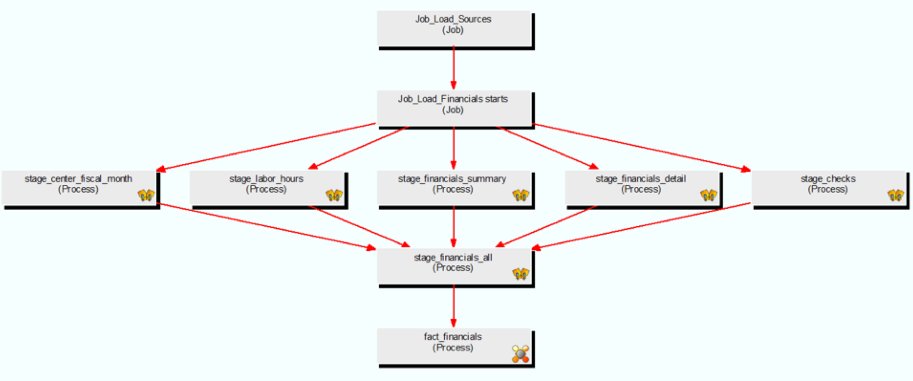

This project was part of my Business Intelligence coursework INFO 4940 supervised by Prof. Jeff Christen at Cornell during Fall 2016.
Cornell Dining
is a $54M business with 10 All You Care To Eat dining facilities, 15 retail cafés, 4 retail coffee shops, 2 full service convenience stores and 2 catering service operations. There are 7 members of the management team who are ultimately responsible for making sure these businesses are operationally sound. This includes managing menus, employees, purchases including food and supplies, and attending strategic meetings. Ad hoc managerial reporting is essential to this team when making important business decisions.
In 2011 the university migrated to a new financial system. While the new technology enhanced transactional accuracy and efficiency, the reporting system, that had been personalized to meet each department’s needs, had to be completely re- created. In 2016, departments are still working on re-creating and re-building the managerial reports that are essential to assessing day-to-day operations. Currently, many of the managerial reports that dining uses are still pulled together manually – either daily or monthly.
The report that we worked on is a tool that the dining management team will use to help assess the Key Performance Indicators (KPI’s) in the food industry to help measure operational performance compared to budget and, in some instances, industry benchmarks. These monthly metrics will let the management team assess the effect of any operational changes that they’ve made during the month.
Data to support the KPI’s requested by Dining services comes from four source systems:
- University financial data warehouse
- Employee hourly time tracking data mart
- Dining service’s Point of Sales operational system (Micros)
- Budget numbers from a spreadsheet maintained by Dining Services
Cost of Goods Sold (COGS) as a % of revenue
This indicates how effectively an organization is purchasing the supplies directly involved in the creation of products for sale.
Inventory Turns
This indicates how many times a company’s inventory is sold and replaced over a period of time. This is a good measure of how efficient the organization is with managing inventory and turning product into sales.
Sales Per Labor Hour
This indicates how efficiently an organization is at using its labor force to generate sales. This indicator is best used over a period of time and not as a day-to-day indicator. By comparing productive labor hours to the total sales that are generated, the unit can judge if there are too many or too few employees on average.
Average Check
Comparing the average check to a prior period, likely prior year, is one component to determining whether sales are stronger or weaker than in the past.
Financial Fact Table (using WhereScape)

Dependency Diagram Financial Data (using WhereScape)
Tableau screenshots for some of the KPIs
(Screenshots are blurred on purpose, so as to avoid revealing the actual insights.)
Here is a link to the e-Portfolio that we published on the Cornell site, showcasing the entire process we followed for the project along with data insights from the Tableau dashboards.
Team members:
Charmi Mehta Suganya Sankaran Trinh LeJean Maldonado Caizapanta Brendan Larar